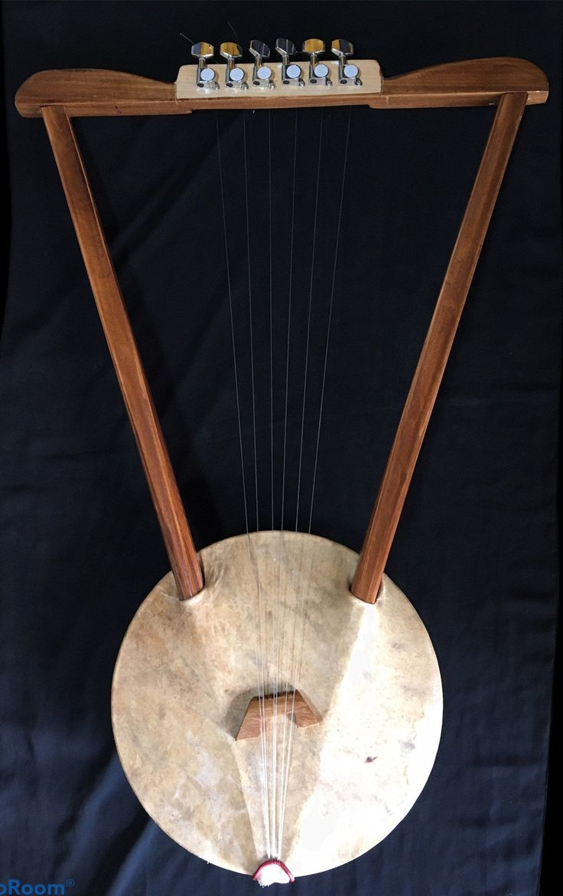
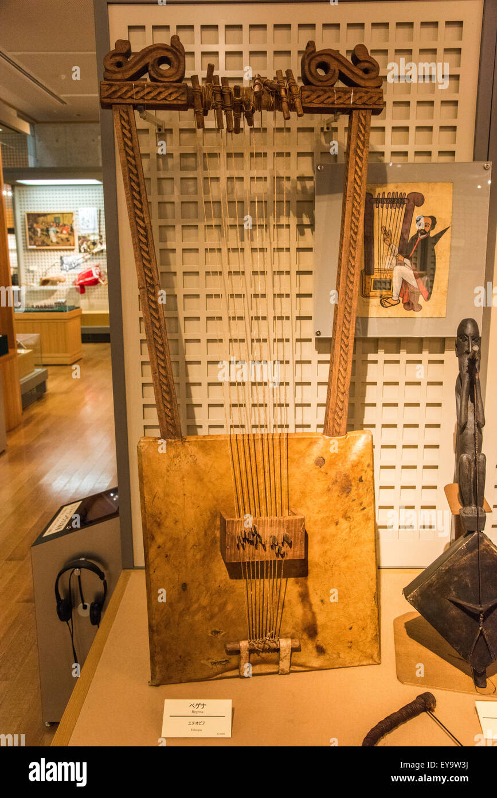
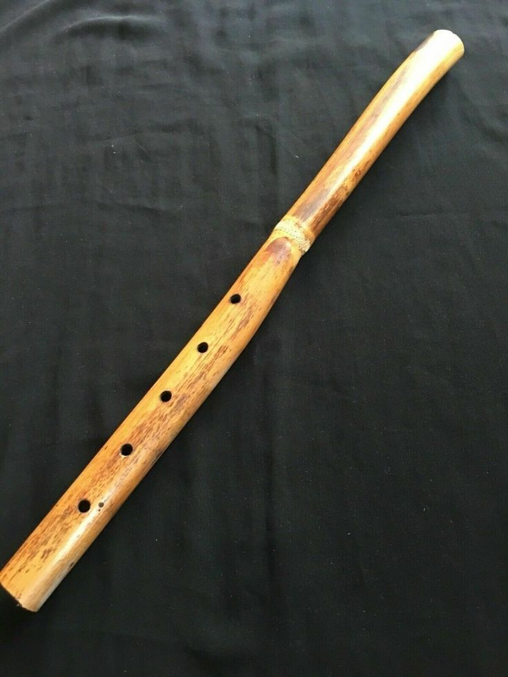
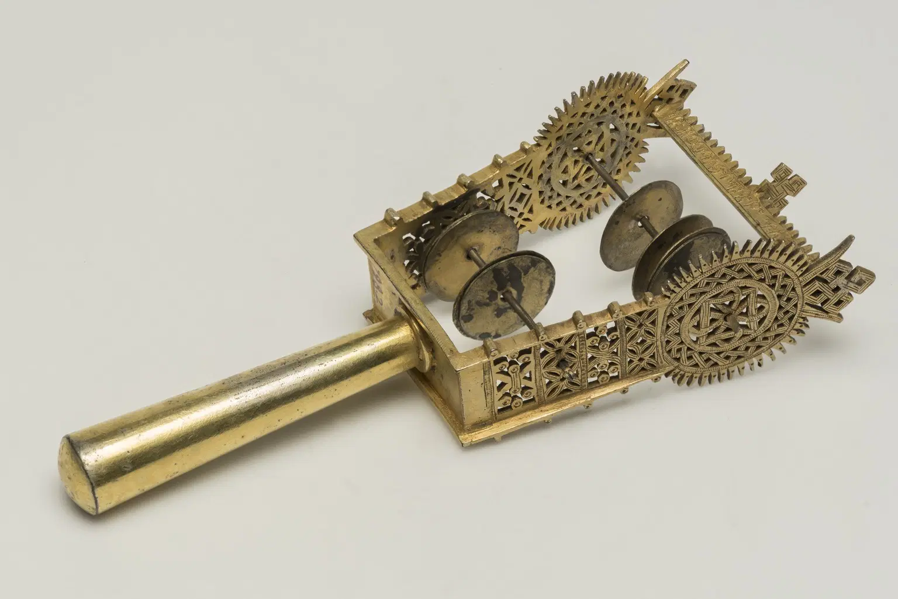
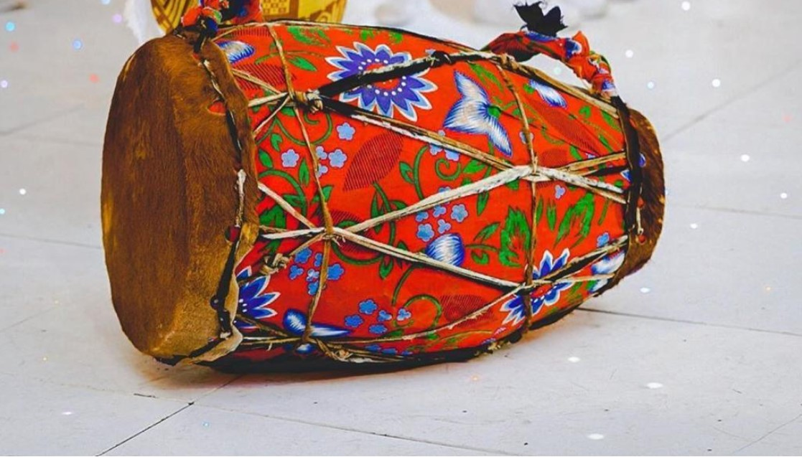

1,Kirar
The krar is a traditional Ethiopian string instrument with a small bowl-shaped body and several strings. It is often used to accompany singing and storytelling. Its sound can range from gentle melodies to energetic rhythms, making it an important instrument in Ethiopian musical traditions.

2,Begena
The begena is a large traditional Ethiopian string instrument with a deep and resonant sound. It is strongly associated with religious and spiritual music and has historically been used for reflection and meditation. Its large frame and multiple strings give it a distinctive appearance and sound.

3,washint
The washint is a traditional Ethiopian wind instrument similar to a flute. It is commonly made from bamboo or another hollow material and is used in different Ethiopian musical traditions. Its simple design allows musicians to create distinctive melodies.

4,Tsinatsil
Tsinatsil is a traditional Ethiopian percussion instrument made from a metal frame with small metal discs or pieces that produce a rattling sound when shaken. It is especially associated with Ethiopian Orthodox religious music and ceremonies, where its rhythmic sound accompanies singing and prayers.

5,kebero
The kebero is a traditional Ethiopian drum used to create rhythm during music, celebrations, ceremonies, and religious events. It can be played with the hands or sticks and is often heard accompanying songs, processions, and other performances.

6,Masinko
The masinko is a traditional one-string bowed instrument. It has a simple structure consisting of a resonating body, a long neck, and a single string. It is commonly used to accompany singers and performers and is particularly associated with traditional Ethiopian music.